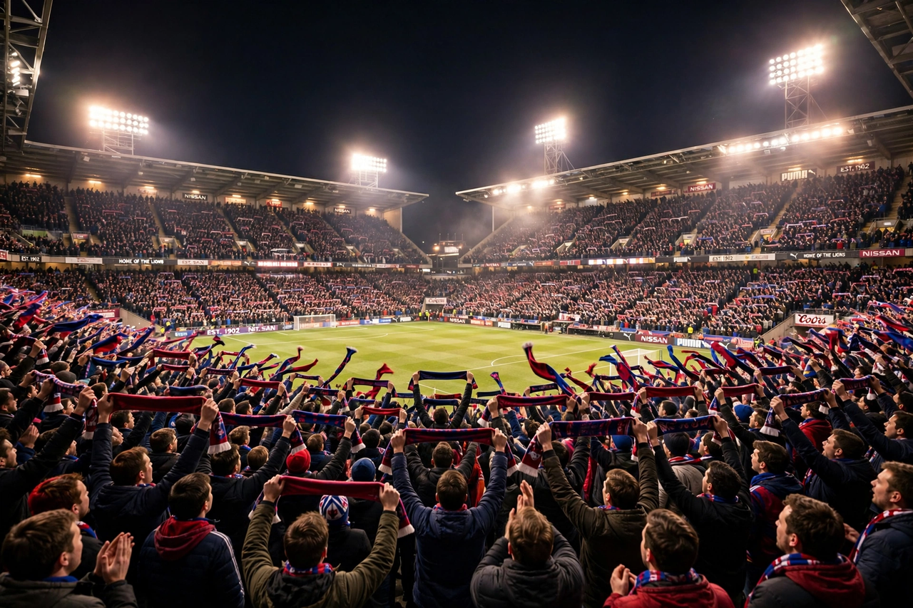

Football
Late winner settles five-goal thriller as title race tightens
A stoppage-time strike completed a remarkable comeback and cut the gap at the top of the table to two points.

A stoppage-time strike completed a remarkable comeback and cut the gap at the top of the table to two points.
A dramatic final session turned the Test match on its head, leaving the tourists needing a modest target to win.
The head coach backed youth as injuries forced a reshuffle ahead of next month's fixtures.
An inspired early switch to intermediate tyres proved decisive in a race of changing fortunes.
Tennis: top seed cruises into quarter-finals
Golf: veteran rolls back years to lead major
Athletics: sprint sensation lowers personal best again
Boxing: title fight confirmed for the spring